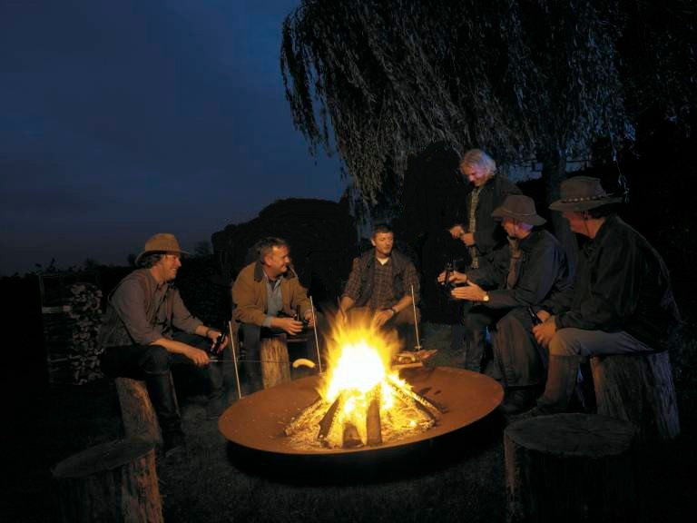

Poet: James Patrick Kinney
Six humans trapped in happenstance
In bleak and bitter cold.
Each one possessed a stick of wood
Or so the story's told.
Their dying fire is in need of logs,
But the first one held hers back,
For, of the faces round the fire,
She noticed one was black.
The next man looking 'cross the way
Saw one not of his church,
And could not bring himself to give
The fire his stick of birch.
The third one sat in tattered clothes,
He gave his coat a hitch.
Why should his log be put to use,
To warm the idle rich?
The rich man just sat back and thought
Of the wealth he had in store,
And how to keep what he had earned
From the lazy, shiftless poor.
The black man's face bespoke revenge
As the fire passed from his sight
For all he saw in his stick of wood
Was a chance to spite the white.
The last man of this lorn group
Did nought except for gain.
Giving only to those who gave
Was how he played the game.
Their logs held tights in death's still hands
Was proof of human sin.
They did not die from the cold without
They died from the cold within.